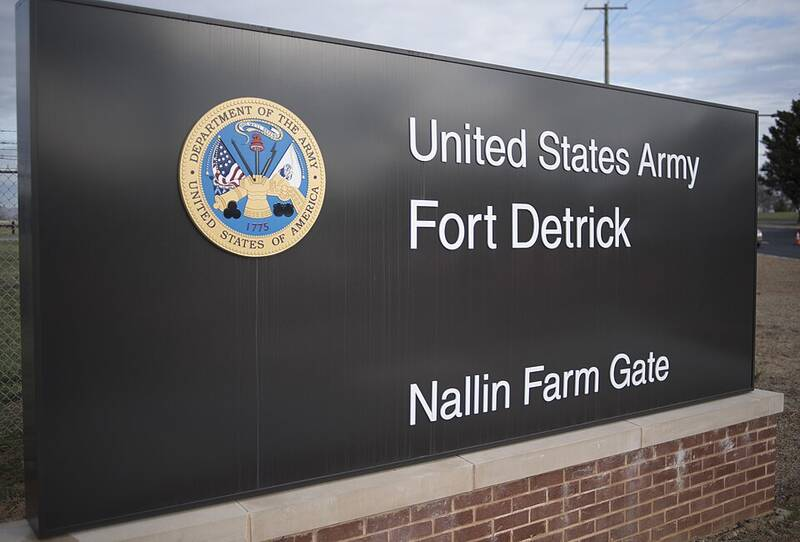

Fort Detrick
MKUltra, Maryland

Army biological research center where the CIA's Special Operations Division worked on MKUltra-related projects. Scientist Frank Olson was secretly dosed with LSD in 1953 and died days later. Confirmed program. 1
Open in the interactive Watcher
Related
- Frank Olson Person
Sources
- Fort Detrick Wikipedia